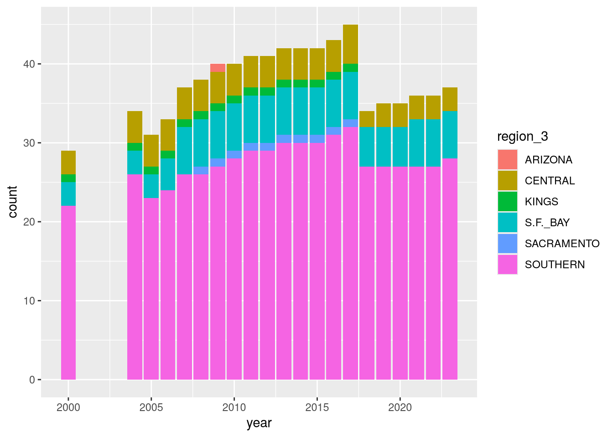
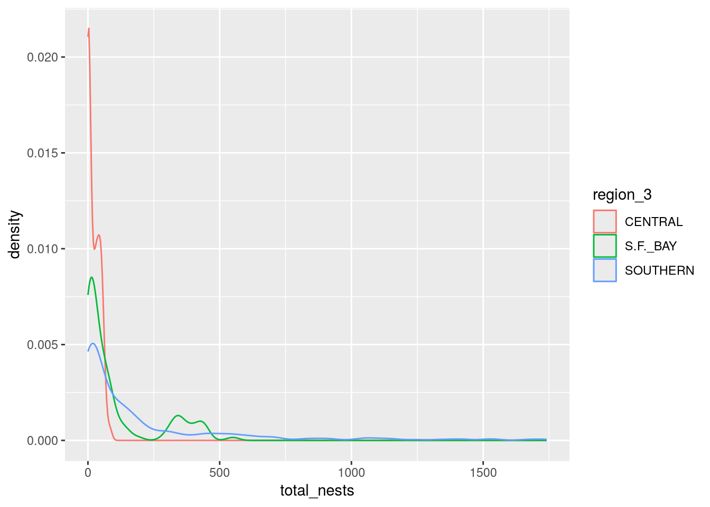
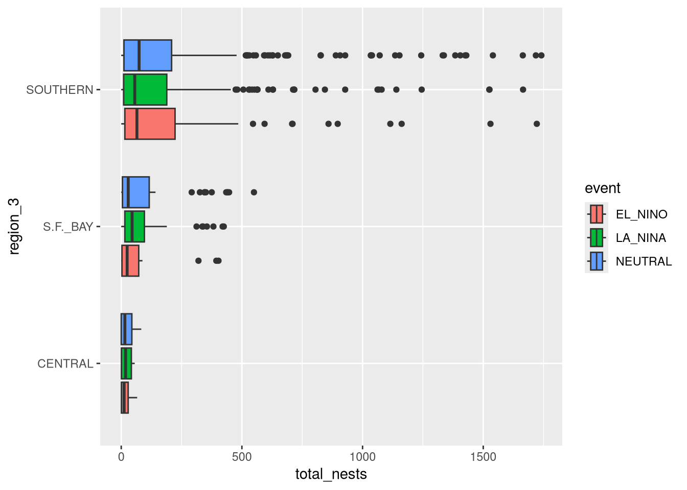
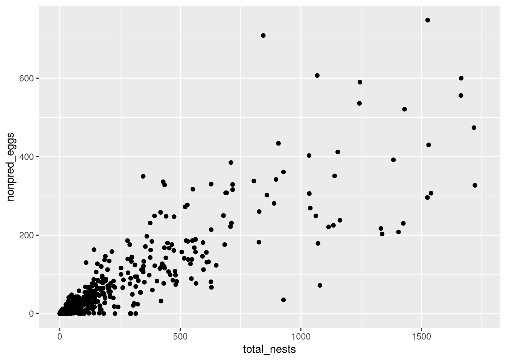
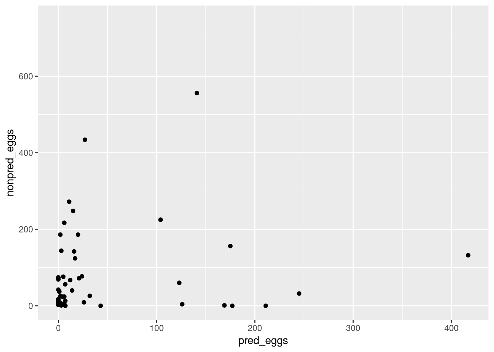
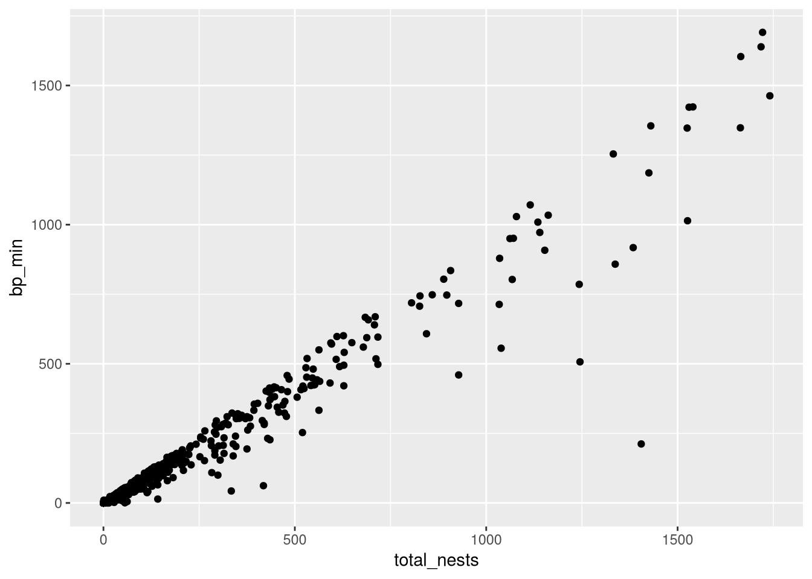
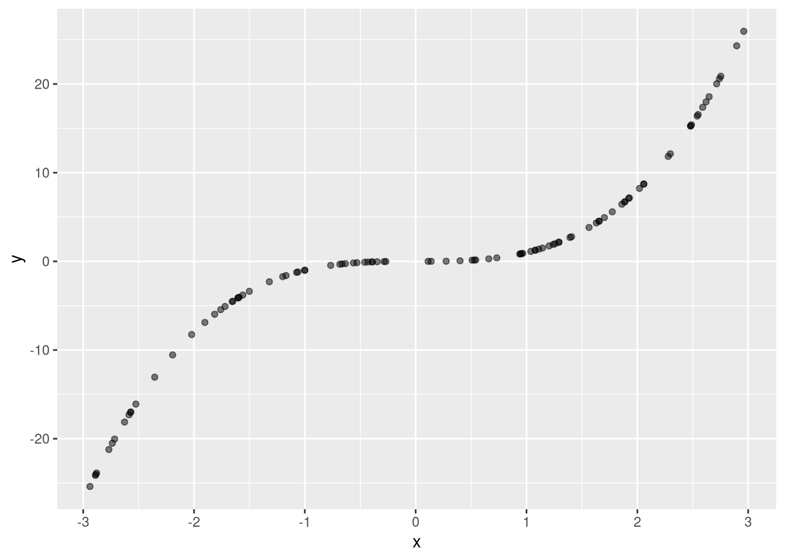
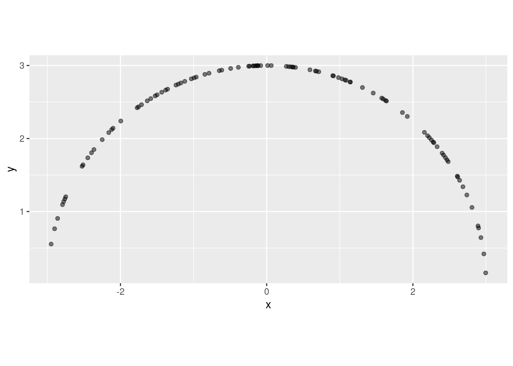

library("ggplot2")
ggplot(terns) +
aes(x = year, fill = region_3) +
geom_bar()
After this lesson, you should be able to:
This chapter uses the following R packages:
For a refresher about how to install and load packages, see the Packages section of DataLab’s R Basics workshop reader.
Until now, we’ve focused almost exclusively on exploring one feature at a time. In order to understand relationships between features, we need to explore two or more together. This chapter introduces a few strategies for visualizing and measuring relationships between features.
Visualizations are an excellent starting point for exploring multiple features at once, because they show more details than any individual statistic. Moreover, in R (especially with ggplot2), changing a plot of one feature to show more is relatively straightforward.
When thinking about visualizing multiple features, the first thing to do is choose an appropriate plot. The types of the features generally hint at specific kinds of plots:
| Feature 1 | Feature 2 | Plot |
|---|---|---|
| categorical | bar, dot | |
| categorical | categorical | bar, dot, mosaic |
| numerical | box, density, histogram | |
| numerical | categorical | box, density, ridge |
| numerical | numerical | line, scatter, smooth scatter |
If you want to add a:
Keep in mind these are all suggestions rather than rules. Which plot is best also depends on the questions you want to answer, the distribution of the data, and the audience for the plot.
Visualization design is a deep topic, and whole books have been written about it. One resource where you can learn more is DataLab’s Principles of Data Visualization workshop reader.
R, the ggplot2 package, and the ggplot2 extensions can create a wide variety of visualizations. To learn more about what’s possible, see DataLab’s Intermediate R: Next-Level Data Visualization and the ggplot2 documentation.
As a demonstration, let’s plot some features from the California least terns dataset. In Chapter 2, we found that region_3 includes three unexpected extra regions. We also made a frequency bar plot for year (Figure 2.2) and found that there’s a sharp decline in observations in 2018. Now let’s try to answer a two new questions:
The region_3 feature is categorical. The year feature is discrete, but we can treat it as categorical. So Table 5.1 suggests a bar, dot, or mosaic plot. Let’s make a bar plot. We can use fill color to show the regions:
library("ggplot2")
ggplot(terns) +
aes(x = year, fill = region_3) +
geom_bar()
Figure 5.1 shows that the three expected regions S.F. Bay, Central, and Southern are present across all of the years with observations. There’s some variation in the numbers of observations across the years. The decrease in observations in 2018 is mostly caused by a decrease in observations for the Southern and Central regions, although there’s also a slight decrease for S.F. Bay.
Among the three unexpected regions, Arizona is only present in 2009. Kings is present in 2000 and 2004-2017. Sacramento is present in 2008-2017. For all three of these regions, the numbers of observations appear to be constant and are negligible compared to the expected regions.
Next, let’s explore whether the regions have similar numbers of nests. We’ll use region_3 again, and we’ll also use the numerical feature total_nests.
Before we make a plot, let’s filter the dataset so that it only includes the observations for the expected regions. The other regions have very low numbers of observations, so it’s unlikely they’ll support strong conclusions. We’ll call the filtered dataset terns_ok:
library("dplyr")
Attaching package: 'dplyr'The following objects are masked from 'package:stats':
filter, lagThe following objects are masked from 'package:base':
intersect, setdiff, setequal, unionok_regions = c("S.F._BAY", "CENTRAL", "SOUTHERN")
terns_ok = filter(terns, region_3 %in% ok_regions)According to Table 5.1, a box, density, or ridge plot may be appropriate for this pair of features. Let’s use a density plot. We can put the numerical feature total_nests on the x-axis and color-code the density curves by region_3:
ggplot(terns_ok) +
aes(x = total_nests, color = region_3) +
geom_density()Warning: Removed 8 rows containing non-finite outside the scale range
(`stat_density()`).
The distribution of total_nests appears to be very different from region to region in Figure 5.2. In the Central region, the number of nests is almost always relatively low, with most observations below about 125 nests. In the S.F. Bay region, there are still many observations with low numbers of nests, but there’s also a big group of observations with 250-500 nests. Curiously, there are few observations with 125-250 nests. In the Southern region, the distribution is much flatter than the others, meaning a greater proportion of the observations have relatively large numbers of nests.
Now consider another feature, event, which indicates the climate condition (El Niño, La Niña, or neutral) in the year of each observation. Suppose we want to know whether numbers of nests vary with the climate condition, and whether this differs by region. Then we need to make a plot with region_3, total_nests, and event. We could try to include event in the density plot (Figure 5.2), but putting more curves on the plot might make it difficult to read.
Instead, let’s use a box plot. We can put total_nests on the x-axis, region_3 on the y-axis, and color-code the boxes by event:
ggplot(terns_ok) +
aes(x = total_nests, y = region_3, fill = event) +
geom_boxplot()Warning: Removed 8 rows containing non-finite outside the scale range
(`stat_boxplot()`).
With Figure 5.3, we can compare the distribution of total_nests under different climate conditions for each region. Within each region, the differences between climate conditions are small. For Southern, the La Niña observations appear to have slightly fewer nests. This pattern is reversed for S.F. Bay and Central, where the La Niña observations have slightly higher median numbers of nests.
Finally, let’s examine the relationships between some of the numerical features. We’ll start by asking whether more nests means more mortalities from non-predator causes. So we’ll compare total_nests with nonpred_eggs. Based on Table 5.1, we can use a line, scatter, or smooth scatter plot for this. Let’s use a scatter plot:
ggplot(terns) +
aes(x = total_nests, y = nonpred_eggs) +
geom_point()Warning: Removed 164 rows containing missing values or values outside the scale range
(`geom_point()`).
Figure 5.4 suggests that total_nests and nonpred_eggs do generally increase together, but there’s a lot of individual variation, and exact nature of the relationship is unclear.
Thinking about nonpred_eggs, we might wonder whether non-predator and predator egg mortality trend together. In other words, does nonpred_eggs increase with pred_eggs? Again we can use a scatter plot:
ggplot(terns) +
aes(x = pred_eggs, y = nonpred_eggs) +
geom_point()Warning: Removed 742 rows containing missing values or values outside the scale range
(`geom_point()`).
In Figure 5.5, it’s apparent that the relationship between pred_eggs and nonpred_eggs is weak. This suggests that, perhaps unsurprisingly, the causes of non-predator mortality are probably unrelated to the causes of predation.
It seems plausible that that observations with more breeding pairs will have more nests, so let’s investigate whether this is true as our final exploration. We can use the total_nests and bp_min features for this. Once again, we’ll make a scatter plot:
ggplot(terns) +
aes(x = total_nests, y = bp_min) +
geom_point()Warning: Removed 8 rows containing missing values or values outside the scale range
(`geom_point()`).
Figure 5.6 shows a strong, nearly linear relationship between the two features. Breeding pairs and nests do tend to increase together.
Correlation is a statistic that measures the direction and strength of the linear relationship between two numerical features. In other words, correlation measures whether the two features trace out a line when plotted, and whether the slope of the line is positive or negative. Think of correlation as answering the question “How much does one feature tell us about the other (and vice-versa)?”
Mathematically, for two features \(x_1, x_2, \dots, x_n\) and \(y_1, y_2, \dots, y_n\), the sample correlation \(r\) is defined as
\[ r_{x,\,y} = \frac{1}{n-1} \sum_{i=1}^n \frac{(x_i - \bar{x})(y_i - \bar{y})} {s_x s_y} \]
Notice that this is similar to the definition of sample variance and sample standard deviation (Section 3.4.2). In fact, the sample standard deviation of a feature is the sample correlation of that feature with itself.
Statisticians conventionally write the unknown population correlation, which is estimated by the sample correlation, as \(\rho\). It’s often written with a subscript to indicate the two associated features.
Correlation is always between -1 and 1. Negative correlation means that as one feature increases, the other decreases. Positive correlation means they increase together. Correlation close to 0 means the features are unrelated or have a non-linear relationship. Correlation close to -1 or 1 means the features have a strong linear relationship.
In R, the cor function computes correlation. As examples, let’s compute correlations for the pairs of features we plotted in Section 5.1.3. Some of the features contain missing values, so we’ll set the argument use = "complete.obs" in the cor function; this makes it skip the missing values (similar to na.rm = TRUE in other functions).
First up are total_nests and nonpred_eggs. When we plotted these in Figure 5.4, there was a clearly a relationship, but it wasn’t an exact line. The correlation is:
cor(terns$total_nests, terns$nonpred_eggs, use = "complete.obs")[1] 0.8716927The correlation is positive and fairly high, in spite of the individual variation in observations. The two features tend to increase together linearly.
Now let’s compute the correlation of pred_eggs and nonpred_eggs. In Figure 5.5, these two features didn’t appear to be related. The correlation is:
cor(terns$pred_eggs, terns$nonpred_eggs, use = "complete.obs")[1] 0.1225478So there’s a very weak tendency to increase together linearly.
Finally, we’ll compute the correlation of total_nests and bp_min. These features exhibited a strong linear relationship in Figure 5.6. The correlation is:
cor(terns$total_nests, terns$bp_min, use = "complete.obs")[1] 0.9723232This is consistent with the strong relationship we saw in the plot.
Keep in mind that correlation measures the linear relationship between features. When features have a non-linear relationship, correlation will usually underestimate its strength.
The understimation is often mild as long as the relationship is monotonic, meaning the features always trend in the same direction or always trend in opposite directions. For instance, consider two features where one is the cube of the other (\(y = x^3\)). This is a monotonic relationship, because as one increases, so does the other:

This relationship is as strong as possible—given one feature, we can compute the other. Correlation underestimates the strength of the relationship at 0.917.
When the relationship is not monotonic, correlation can be close to 0 even if the relationship is very strong. For example, consider two features which lie on the perimeter of a circle:

Once again, this relationship is as strong as possible. Nevertheless, because the relationship is not monotonic, the correlation is only -0.137.
If you’re unsure of how to interpret a correlation, making a visualization is a great way to get more insight into the relationship between features.